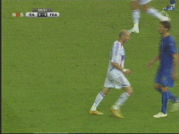
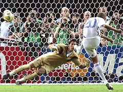
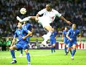
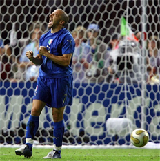

Головна | Наша зіркова збірна | Всі команди | Група Н
Розпочався матч спокійно. Але це лише перші хвилини. Вже на сьомій хвилині у ворота італійців було призначене пенальті. До одинадцятиметрової позначки підійшов Зінедін Зідан. Пробив сильно, але удар виявився непереконливим. М'яч не потрапив до сітки, хоча і перетнув лінію воріт. Гол зарахували. Рахунок 1:0 на користь французів. Гр апродовжевалась. Але і італійці не забарились з відповіддю. На 19 хвилині гол французам забив італієць Марко Матерацці. рахунок 1:1.
Далі гра напруження не скидала, але голів побачити в двох таймах не вдалось. Командам довелось грати два додаткові екстра-тайми по 15 хвилин. але і тут голів не було. Проте було дещо цікавіше за будь-який гол. Мова йде про інцидент Зінедіна Зідана з Марко Матерацці. 
Майже наприкінці матчу - на 110 хвилині Марко Матерацці крикнув щось образливе услід Зідану. Останній не витримав і ... послідував сильний удар головою зідана в груди Матерацці (можна побачити в наступному відео). Багато розмов було з цього приводу, і, звичайно, різних приколів.
Через 10 хвилин закінчився другий екстра-тайм з рахунком 1:1. Тепер переможця мала визначити серія післяматчевих пенальті. Своєрідна лотерея. Звичайно, Чемпіонат Світу - це саме те змагання, яке має визначити найсильнішого, а не найвезучішого. Однак, правила є правила. Воротарі не спіймали жодного м'яча. Тому можна справдді стверджувати, що французам просто не пощастило. Двадцятий номер французів Давід Трезеге пробив по воротах, але м'яч влучив у перекладину. Ось це і стало фатальною помилкою французів. Отож рахунок по пенальті 5:4.
Італія - чемпіон! Італійці справді заслужили овацій. Це сильна збірна, яка знаменита багатьма талановитими іменами:Андреа Пірло, Джанлука Дзамбротта, Франческо Тотті, Лука Тоні, Марко Матерацці, Мауро Каморанезі, Сімоне Перротта.
Фінал Чемпіонату Світу з футболу
Фінальний матч Чемпіонату проходив на Берлінському стадіоні 9 липня 2006 року. Не судилось побачити в ньому українську команду. Натомість змагались дві найсильніші збірні - Італії та Франції. Матч був насичений цікавими подіями і залишив багато спогадів. Було на що подивитись!
Згідно слів Зідана, Матерацці сказав кілька образливих слів, що стосувалися чксті його сестри та матері. Зідану "вручили" червону картку і видалили з поля. Зізу(як його називають фанати) пройшов повз Золоту богиню з опущеною головою. Ось таке прощання з футболом. Адже це був останній матч великого Зінедіна Зідана.
